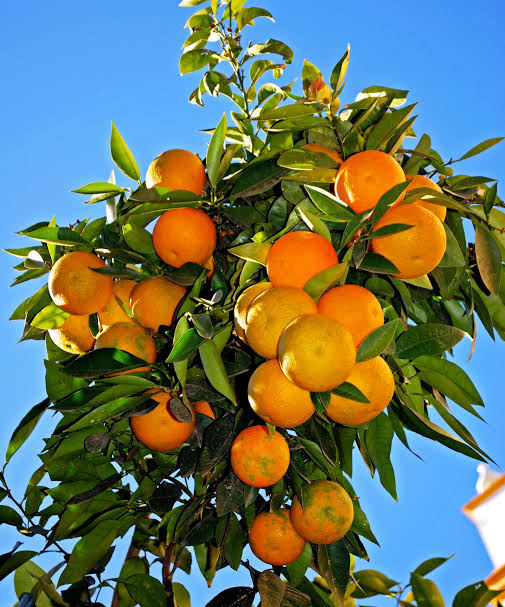

Featured Fruit Trees
Explore key step-by-step guides for popular fruit varieties below. The techniques shared here also apply to dozens of other fruit trees worldwide!

Mango Grafting
Learn veneer and cleft grafting techniques for high-yield mango propagation.

Sweet Orange Grafting
Master T-budding and cleft grafting on hardy citrus rootstocks.

Lemon & Lime Grafting
Propagate pest-resistant lemons with top-working techniques.

Avocado Grafting
Step-by-step instructions on side-tongue and cleft grafting Hass avocados.

Apple Grafting
Learn bench grafting and whip-and-tongue methods for dwarf apple varieties.
Coffee Grafting
Graft Robusta rootstocks with Arabica scions to withstand root-knot nematodes.